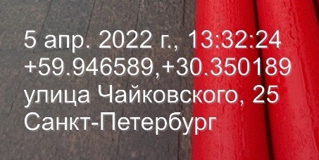
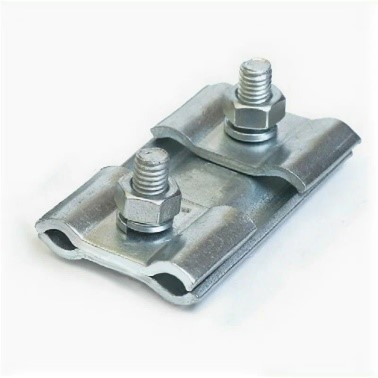

Как избежать сложностей при сдаче ИД заказчику: пошаговая инструкция

Часто у производственно-технического отдела возникают сложности при сдаче исполнительной документации. Эксперты Высшей инженерной школы разработали заключительный урок первого курса, чтобы помочь вам с первого раза пройти стройконтроль.
Начните с видео-урока, в котором раскрыты эксклюзивные лайфхаки успешной сдачи исполнительной документации.
Источник и ограничения: для просмотра требуется сеть и доступ к внешней площадке.
Рассмотрим этапы сдачи документации от стройконтроля.
Подготовили для вас короткую презентацию с данными этапами, которую вы можете распечатать и использовать в работе. Подробнее описание каждого шага смотрите ниже.
Встроенный материал · штатный PDF-экспорт
Открыть сохранённый PDF · Исходная страница
Текст и изображения исходной страницы

Шаг 1
Шаг 2
Шаг 3
Шаг 4
Шаг 5
Шаг 6
Шаг 7
Шаг 8
Шаг 1
Шаг 2
Шаг 3
Шаг 4
Шаг 5
Шаг 6
Шаг 7
Шаг 8
Вызывайте представителя официальным письмом
Вызовите представителя стройконтроля официальным письмом, чтобы предъявить скрытые работы, – за 3 дня (часть 11 Постановления № 468). Если вызвали инженера СК неофициально, могут быть сложности. Например, он не приехал, забыл, заболел. Если нет официального вызова, никто не сможет его заменить. Вызовы в мессенджерах оговаривают отдельно.
Выстройте коммуникацию с прорабами
Бывают случаи, когда прорабы или мастера выполняют скрытые работы и не ставят в известность ПТО. А после отчитываются, что работу закончили. В таких случаях стройконтроль может работы не принять. Особенно если это ответственная конструкция.
Зафиксируйте все на фото
Даже если стройконтроль приезжал на объект, перестрахуйтесь и сделайте подробную фотофиксацию с использованием измерительных материалов. Попробуйте приложение Timestamp Camera. На фото должны быть:
- дата съемки;
- координаты места съемки;
- общий вид работ.

Следите, чтобы материалы соответствовали документам
Материалы, которые применяют при подготовке ИД и КС-2, должны соответствовать рабочей документации и подтверждаться ИД. Если есть отклонения, необходимо согласовать их до того, как подаете ИД на проверку.
Определяйте комплектность ИД по документам
Она прописана в приказе Минстроя № 344/пр, в согласованной РД и ППР. У крупных корпораций, таких как Роснефть, Росатом, Россети, есть перечень ОРД, который не противоречит приказу Минстроя № 344/пр, но его можно дополнить актами, формами, журналами, ВСН. Также некоторые формы актов могут иметь другой вид и формат.
Перед подготовкой ИД ознакомьтесь с ОРД заказчика, если такая есть. Учтите все требования. Если какая-то форма непонятна, уточните у инженера СК, как ее заполнить.
Посоветуйтесь со стройконтролем, прежде чем готовить ИД
Узнайте порядок и правила приемки. Составляйте официальное письмо и прикладывайте реестр документации, когда передаете экземпляр на проверку. Это сократит сроки проверки ИД со стороны заказчика.
Согласуйте официально все отклонения
Не существует объекта, который построили без отклонений от рабочей документации. До подачи ИД и КС-2 на проверку позаботьтесь, чтобы все отклонения официально согласовали. Лучше всего, чтобы их внесли в РД. Если на объекте закрепили авторский надзор, то запись об отклонениях внесите в журнал.
Пишите названия и объемы подробно
Прописывайте названия работ и объемы развернуто, когда передаете ведомости объемов работ (ВОР) сметчикам. Проверьте, все ли позиции из ВОР учли правильно, когда появится КС-3 и КС-2. Бывает, что сметчик не разобрался в объемах или нашел в сметном расчете другую позицию и применил расценку на работы, которые не производили указанным методом. Из-за этого СК может не принять работы.
Пример. Как подать разработку грунта
Вы подаете разработку грунта механизированно и вручную.
В ССР есть дополнительная позиция разработки мокрого грунта, и она стоит дороже. Сметчик ее применяет. Хотя на самом деле при работах такого типа грунта не было.
Стройконтроль такую позицию не подтвердит.
Как оформить пакет ИД, чтобы стройконтроль ее принял
В презентации эксперты школы показали практичный алгоритм от опытного представителя стройконтроля, который позволит без проволочек сдать весь пакет СК.
Встроенный материал · штатный PDF-экспорт
Открыть сохранённый PDF · Исходная страница
Текст и изображения исходной страницы
1. Подготовьте все документы
Соберите пакет документов, когда подаете ИД на проверку:
– КС-3, КС-2, КС-6а,
– ИД,
– журналы,
– сканы или копии с печатью «копия верна»,
– сопроводительное письмо,
– контрольные съемки в формате DWG при необходимости.
Эти данные прикладывайте отдельными файлами, если иной порядок не установлен ОРД
При проверке быстрее и легче открыть два разных файла, например ИД и ОЖР, чем листать один и тот же файл
2. Сформируйте порядок в файле ИД
– реестр,
– выписка СРО,
– приказы,
– выписка НОСТРОЙ на ответственного за стройконтроль от подрядной организации,
– АОСР плюс схема,
– паспорта на материалы – если паспорта не формируют отдельным файлом согласно ОРД
3. Приложите документы на материалы
Это необходимо, чтобы подтвердить использование материалов
Документами являются паспорт качества или сертификат качества
Паспорт удостоверяет соответствие партии продукции определенным параметрам — длина, ширина, тип сырья
Характеристики материала на партию будут указаны в паспорте (сертификате) качества
Некоторые характеристики в зависимости от партии могут отличаться
4. Проверьте, все ли работы и материалы к КС-2 отражены в ИД
Возможно, какие-то работы объединили в один АОСР или один паспорт относится к разным работам
Например, песок для подготовки и обратной засыпки
В любом случае ИД должна полностью подтверждать КС-2
5. Проверяйте комплектность документации
Это важно делать, когда подаете выполнение на проверку
Это ускоряет проверку и уменьшает вероятность отказа в приемке работ
1. Подготовьте все документы
Соберите пакет документов, когда подаете ИД на проверку:
– КС-3, КС-2, КС-6а,
– ИД,
– журналы,
– сканы или копии с печатью «копия верна»,
– сопроводительное письмо,
– контрольные съемки в формате DWG при необходимости.
Эти данные прикладывайте отдельными файлами, если иной порядок не установлен ОРД
При проверке быстрее и легче открыть два разных файла, например ИД и ОЖР, чем листать один и тот же файл
2. Сформируйте порядок в файле ИД
– реестр,
– выписка СРО,
– приказы,
– выписка НОСТРОЙ на ответственного за стройконтроль от подрядной организации,
– АОСР плюс схема,
– паспорта на материалы – если паспорта не формируют отдельным файлом согласно ОРД
3. Приложите документы на материалы
Это необходимо, чтобы подтвердить использование материалов
Документами являются паспорт качества или сертификат качества
Паспорт удостоверяет соответствие партии продукции определенным параметрам — длина, ширина, тип сырья
Характеристики материала на партию будут указаны в паспорте (сертификате) качества
Некоторые характеристики в зависимости от партии могут отличаться
4. Проверьте, все ли работы и материалы к КС-2 отражены в ИД
Возможно, какие-то работы объединили в один АОСР или один паспорт относится к разным работам
Например, песок для подготовки и обратной засыпки
В любом случае ИД должна полностью подтверждать КС-2
5. Проверяйте комплектность документации
Это важно делать, когда подаете выполнение на проверку
Это ускоряет проверку и уменьшает вероятность отказа в приемке работ
Как быстро проверить свой пакет ИД на формальные ошибки
Исполнительная документация у инженеров ПТО — это как почерк. Поэтому можно смело сказать: идеальной исполнительной документации не бывает. Чаще всего складывается ситуация, когда ИД в целом не противоречит требованиям СК, но из-за мелких недочетов придется ее переделывать или устранять замечания.
Ниже в памятке показали, на что следует обратить внимание заранее, чтобы СК не завернул документацию по формальным признакам.
Почему у стройконтроля так много требований
Когда инженеру ПТО нужно сдать ИД, он защищает объемы работ перед стройконтролем. Неприятно, но в приемке выполнения могут отказать. Начальство недовольно, прорабы пожимают плечами, а инженер ПТО борется за объемы с новыми силами. Разберем, почему стройконтроль требует столько документов и актов.
Инженер стройконтроля отвечает за безопасность ОКС, строительных конструкций и участков сетей инженерно-технического обеспечения, за соответствие работ, конструкций и участков сетей требованиям техрегламентов и ПД.
Если инженер стройконтроля ошибется, его привлекут к административной ответственности по статьям 9.4, 9.5 КоАП
А также приостановят его деятельность
Кроме того, СК также контролируют. Аудит выезжает на объекты и проверяет все использованные материалы, их количество и соответствие рабочей документации (РД).
Пример аудита стройконтроля
Плашечный зажим, который соединяет спуски заземления высоковольтных опор. По размеру он в два раза меньше мобильного телефона. Их на одной опоре несколько.
Представитель аудита или КРУ может пройти все опоры и посчитать каждый элемент.

Поэтому СК будет страховать свою ответственность и следить за тем, чтобы объемы в ИД и КС-2 соответствовали фактическим объемам. Подрядчик после согласования ИД получает деньги и никакой финансовой ответственности, кроме гарантийной, не несет. А вот инженер СК будет отвечать за это не один год.
Многие инженеры стройконтроля работали в ПТО и знают, где «прячутся» объемы работ. Поэтому на практике инженеру ПТО сложно подтвердить соответствие фактических объемов работ и КС-2. Они почти всегда не совпадают.
В связи с этим нужно стараться максимально отражать реальный объем на объекте, тогда со стройконтролем не будет проблем. И не стоит завышать объемы, если их на объекте нет.
Поздравляем вас! Вы успешно прошли первый курс программы и теперь владеете знаниями об исполнительной документации, а именно: для чего она нужна, из чего состоит, а также, как ее формировать и вести. Переходите в следующий курс и узнайте, как грамотно составлять и оформлять основные документы исполнительной документации.
Примечание на 24.09.2026. Пункт 5 Порядка ведения ИД по приказу Минстроя № 344/пр изменён приказом № 369/пр с 01.03.2026. Перед применением изложенных здесь требований сверьте актуальную редакцию: приказ № 344/пр, изменение № 369/пр. Исходный учебный текст не изменён.
{kind=link}
{kind=link}